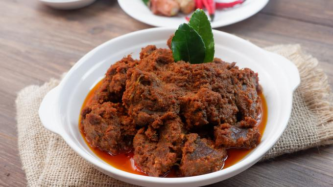

Resep Rendang
Bahan
- 1 kg daging sapi has dalam
- 1 lembar daun kunyit, sobek-sobek
- 4 lembar daun jeruk
- 2 lembar daun salam
- 1 buah bunga lawang
- 2 batang serai, geprek
- 1/2 buah pala, tumbuk
- 1/2 sdt ketumbar
- 2 sdt garam
- 2 liter santan kelapa
Bumbu Halus
- 17 butir bawang merah
- 10 siung bawang putih
- 1 ruas jahe
- 1 ruas lengkuas
- 2 ruas kunyit
- 100 gram cabai keriting
Cara Membuat
- Tumis bumbu halus. Tambahkan santan kelapa.
- Tambahkan daun kunyit, daun jeruk, daun salam, serai, pala, dan ketumbar. Aduk-aduk hingga mendidih
- Masukkan daging. Masak sambil terus diaduk-aduk dengan api kecil sampai kelihatan berminyak.
- Masak hingga air menyusut dan keluar minyak sambil sesekali diaduk. Matikan api. Angkat dan sajikan rendang daging sapi.